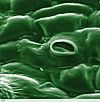

stoma

Definition: In botany, a stoma (from Greek στόμα, "mouth", plural "stomata"), also called a stomate (plural "stomates"), is a pore found in the epidermis of leaves, stems, and other organs, that controls the rate of gas exchange. The pore is bordered by a pair of specialized parenchyma cells known as guard cells that regulate the size of the stomatal opening.
Source: Wikipedia
Wikipedia Page
Wikidata Page